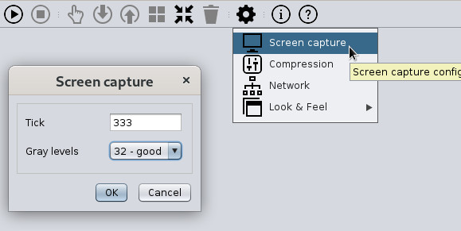
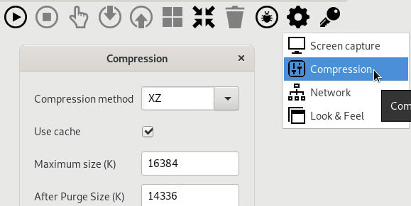
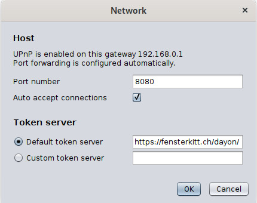
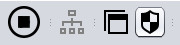
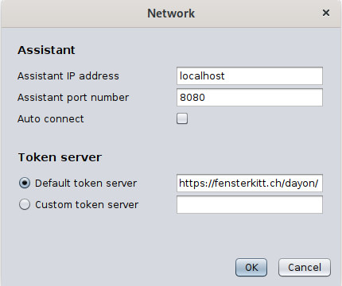

设置
协助端（Assistant）电脑
用这个表单设置如何捕获受助端（Assisted）的屏幕；可以配置两次捕获之间的间隔（毫秒，即捕获间隔），以及灰度等级。 如果配置的捕获间隔让对方设备负载过重，受助端（Assisted）会自动增加该值，直到不再跳过捕获。 从 Dayon! 15 起，也可以使用 sRGB 颜色。此时灰度等级会被忽略。 请注意，使用「真彩色」会占用更多带宽，并在受助端（Assisted）消耗更多内存。

支持两种压缩算法：ZIP 和 XZ。XZ 的压缩比明显更高，但更占用 CPU 和内存，因为它比 ZIP 复杂得多，而且使用 JAVA 实现（ZIP 则使用 JDK 中的原生代码）。
支持缓存功能，避免同一块位图被反复发送，比如打开、浏览菜单时（菜单底下的画面不会再发一遍）。屏幕会分成许多图块，每块都可能被缓存。需要设定缓存里的最大图块数量，目前一个图块是 32×32 像素、256 级，也就是 1K。

扩展连接设置

除了协助端（Assistant）监听的端口号，还可以在网络设置对话框里配置要用的令牌服务器。
可以用默认令牌服务器，也可以用自定义的，可用的令牌服务器列表见下方。
重要：协助端（Assistant）和受助端（Assisted）必须使用相同的令牌服务器！
受助端（Assisted）电脑
UAC 设置
为了让协助端（Assistant）能看到所有系统对话框，Windows 下需要调整 UAC（用户帐户控制）设置。
方便起见，受助端（Assisted）界面里可以直接打开 UAC 设置。通常情况下，倒数第二档就够用了。
译者注：这里可能是指的UAC设置中的倒数第二档 —— ‘仅当应用尝试更改我的计算机时通知我（不降低桌面亮度）’。

扩展连接设置

如果不想使用令牌连接，可以在受助端（Assisted）的网络设置对话框中，手动填写协助端（Assistant）的 IP 地址和端口号。
也可以使用受助端（Assisted）的自动连接功能。启用后，下次启动时会直接连接到指定主机，不再询问。
另外还可以指定要用的令牌服务器，默认或自定义均可。
可用的令牌服务器列表见本页 底部。
重要：受助端（Assisted）和协助端（Assistant）必须使用相同的令牌服务器！
通过命令行让受助端（Assisted）发起连接
可以通过命令行参数传入协助端（Assistant）的主机名或 IP 地址以及端口，其中 ah=主机或 IP 地址，ap=端口号：
dayon_assisted.sh ah=an.example.com ap=4242(Linux/macOS)dayon.assisted ah=an.example.com ap=4242(Linux Snap)./assisted.sh ah=an.example.com ap=4242(Linux Quick Launch)java -jar dayon.jar ah=an.example.com ap=4242(Windows/Linux/macOS)assisted.exe ah=an.example.com ap=4242(Windows Quick Launch)
如果用这些示例参数启动受助端（Assisted），它会直接连到主机「an.example.com」的「4242」端口。
使用配置文件配置 Dayon!
从 v11.0.5 起，可以将连接参数写入 YAML 配置文件里。
YAML 里的配置会在每次启动时读取并生效，因此可以覆盖用户设置。用户仍可在程序里改设置，但只要有 YAML 配置，这些修改仅在本次运行期间有效。
YAML 配置主要适用于需要自托管令牌服务器（而不是使用公共令牌服务器）的组织，或者希望让受助端（Assisted）启动后自动连接到指定主机的用户。
受助端（Assisted）的 YAML 结构非常简单：
host: "an.example.com" port: 8080 # autoConnect: false # tokenServerUrl: "https://example.org/token/"
- 若不想让受助端（Assisted）启动后立刻自动连接，在
assisted.yaml里取消下面这行的注释：# autoConnect: false - 若要让受助端（Assisted）使用非默认的公共令牌服务器，在
assisted.yaml里取消下面这行的注释，并填入对应的 URL：# tokenServerUrl: "https://example.org/token/"
重要：必须与协助端（Assistant）使用的令牌服务器保持一致！
协助端（Assistant）也有 YAML 配置文件。
-
若要让协助端（Assistant）使用非默认的公共令牌服务器，在
assistant.yaml里取消下面这行的注释，并填入对应的 URL：# tokenServerUrl: "https://example.org/token/"
重要：必须与受助端（Assisted）使用的令牌服务器保持一致！
YAML 文件可以分别命名为 assisted.yaml 和 assistant.yaml，放在 Dayon! 主目录（即Dayon! 的配置目录）、用户目录，或与 .jar / .exe 同一目录。
若多处都有配置，按这个顺序生效（先找到的优先）。
公共令牌服务器
下面是可供免费使用的公共令牌服务器列表。
想贡献一个 RVS 并将其加入列表？请告诉我！
点击链接可以检查令牌服务器是否可用。如果直接显示版本号，说明服务器正在运行。
- [CH] https://fensterkitt.ch/dayon/
- [DE] https://theater-courage.com/rvs/
- [US] https://dayon.helioho.st/rvs/
- [FR] https://dayon.alwaysdata.net/rvs/
如何自建令牌服务器，请参阅此处。